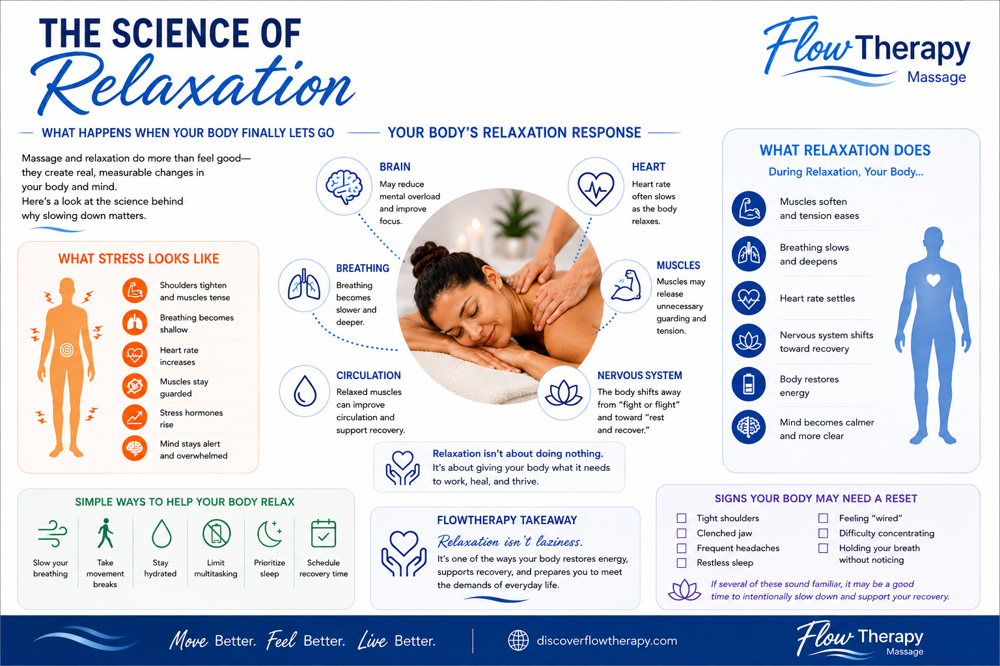

Schedule Your Session
Choose the service, date, and appointment time that best support your current needs, goals, and schedule.
Book an Appointment →Access client forms, aftercare guidance, wellness education, practical resources, and program information—all in one place to support you before, during, and after every FlowTherapy visit.
Follow these four simple steps to prepare for your first appointment and become familiar with your FlowHub resources.
Choose the service, date, and appointment time that best support your current needs, goals, and schedule.
Book an Appointment →Complete your FlowStart Intake and review any forms or documents that apply so everything is ready before your visit.
Visit Client Forms →Find answers about comfort, preparation, pressure, scheduling, policies, and massage care.
Browse FAQs →Review simple recovery guidance you can use after your appointment and between sessions.
View Aftercare →Find the section that best matches where you are in your wellness journey.
Complete intake paperwork, share important health information, review policies, and find current client documents before your appointment.
Access Client FormsFind answers about preparation, comfort, pressure, prenatal massage, scheduling, cancellation policies, and what to expect.
View FAQsFollow a practical recovery timeline, understand common post-session responses, and find guidance for movement, rest, hydration, soreness, and when to seek care.
View AftercareExplore downloadable wellness guides, routines, checklists, and visual tools designed to support movement, recovery, and self-care between appointments.
Explore FlowResourcesRead evidence-informed articles about massage, movement, recovery, workplace wellness, stress, and practical ways to care for your body.
Explore FlowNotesExplore FlowPass memberships, SpaFlow experiences, Veterans resources, and corporate wellness services designed for consistent and specialized support.
Explore Wellness ProgramsStart with one educational article and one practical visual guide from the growing FlowHub library.

Learn how stress may affect breathing patterns and how gentle, comfortable breathing may support relaxation.
Read FlowNote →Use five simple movements to reduce stiffness and reset after prolonged sitting or computer work.
View Guide → Read FlowNote →Explore the newest wellness education added to the FlowNotes library.
Schedule your FlowTherapy appointment, then return to FlowHub whenever you need forms, preparation guidance, education, or recovery support.